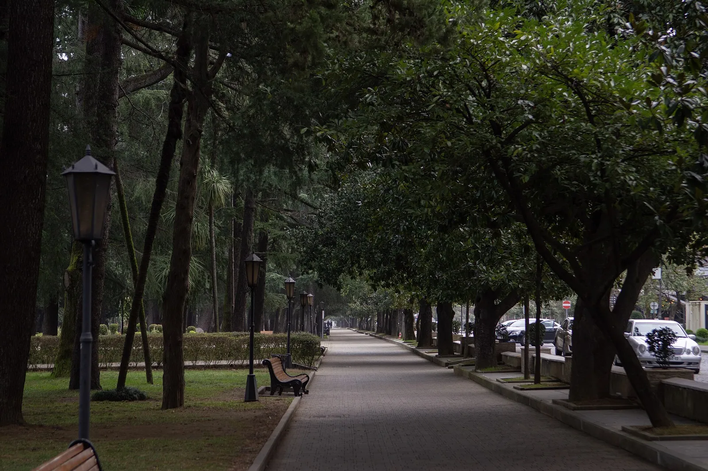
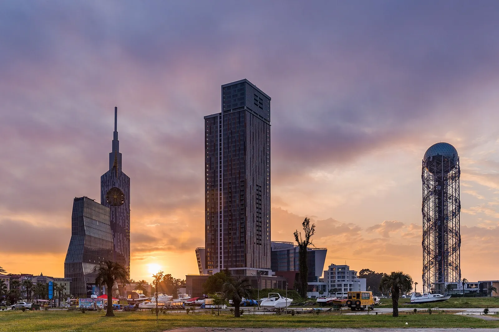
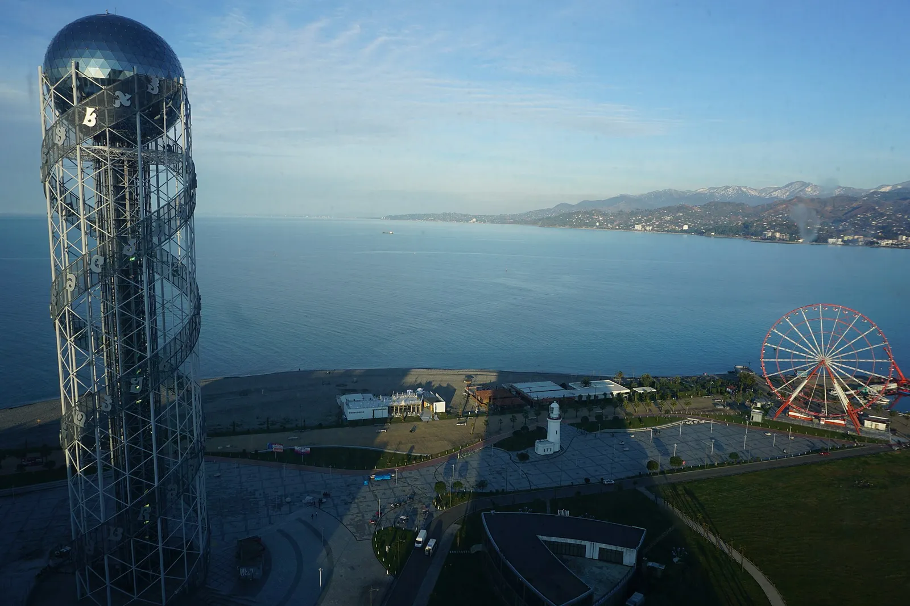
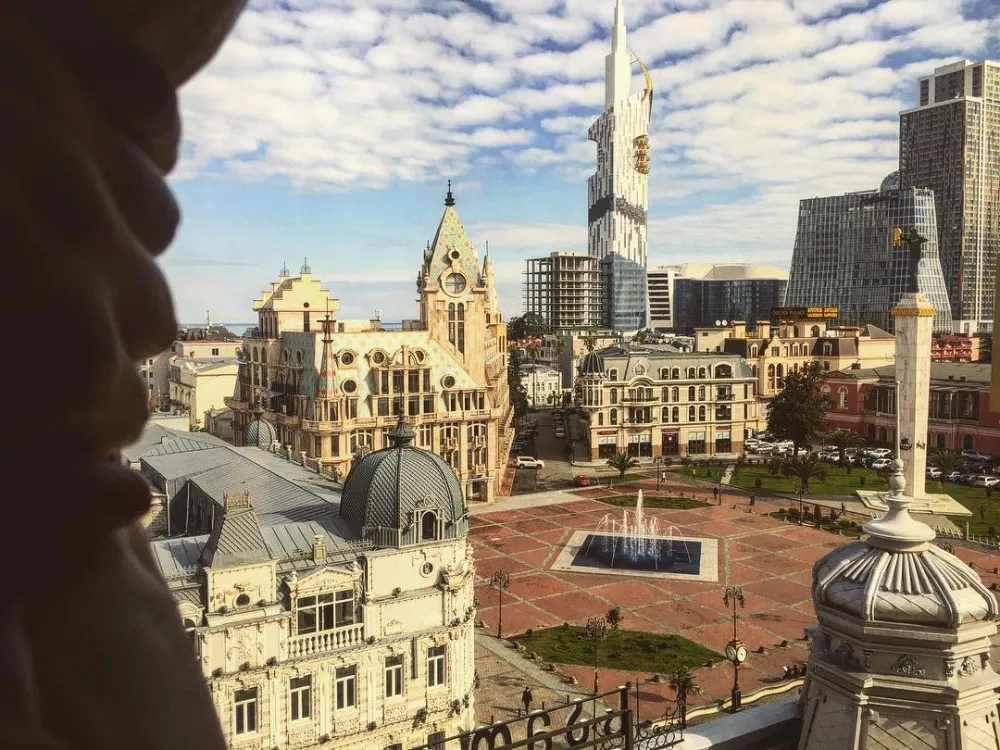
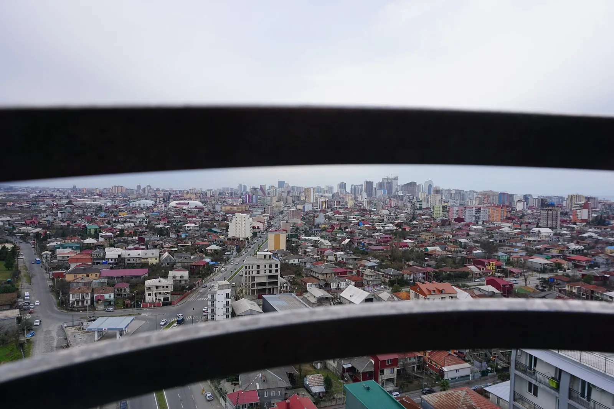
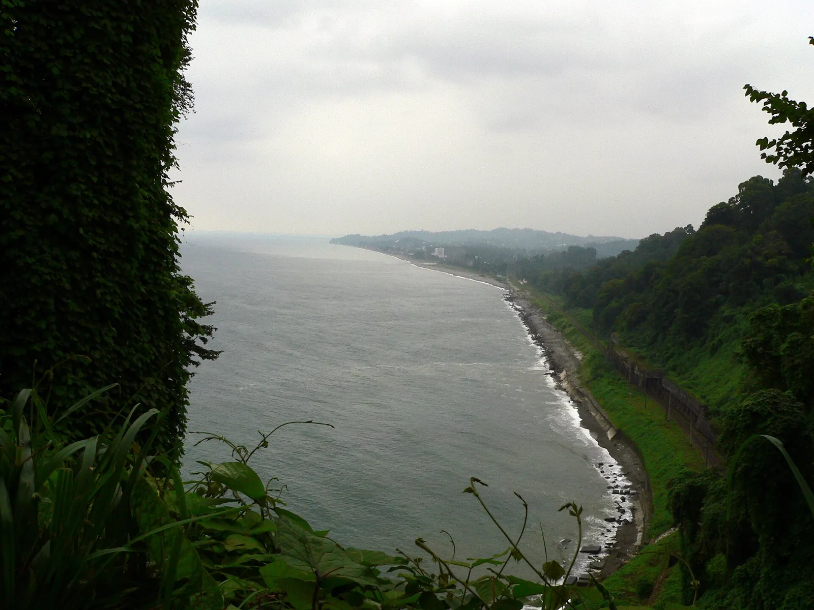
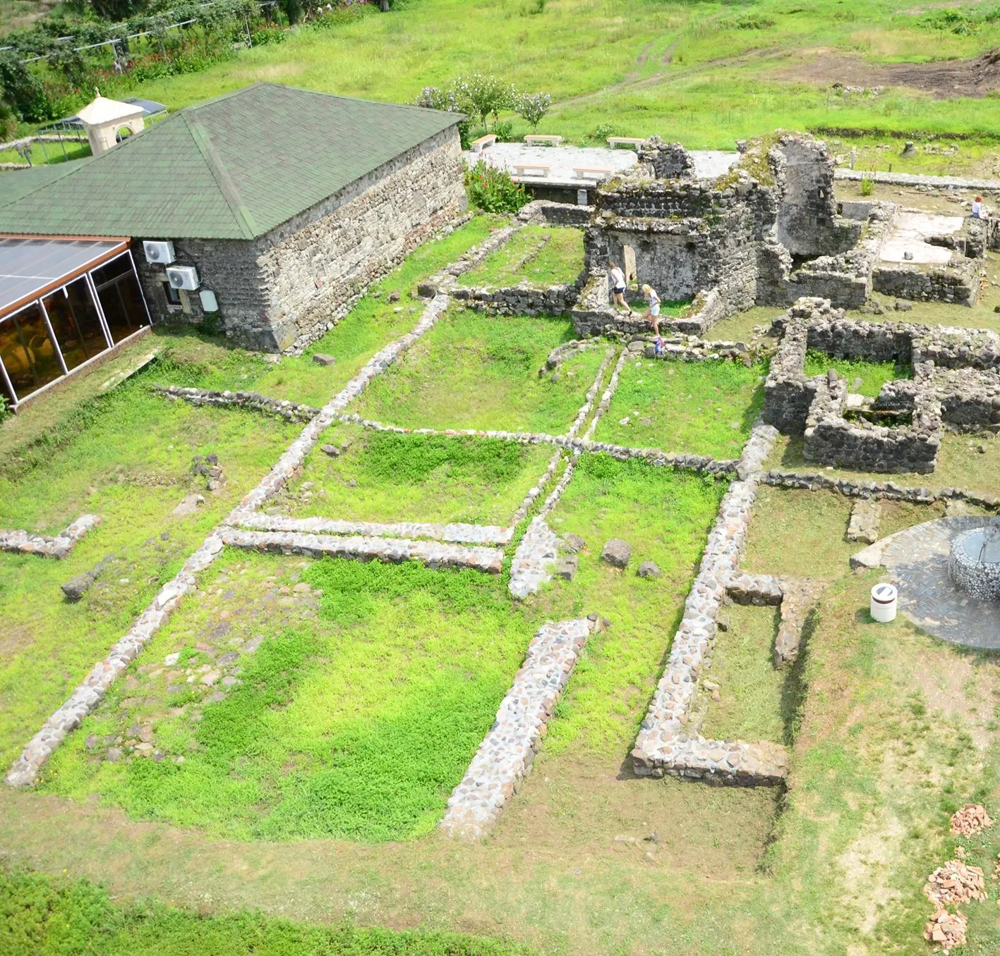
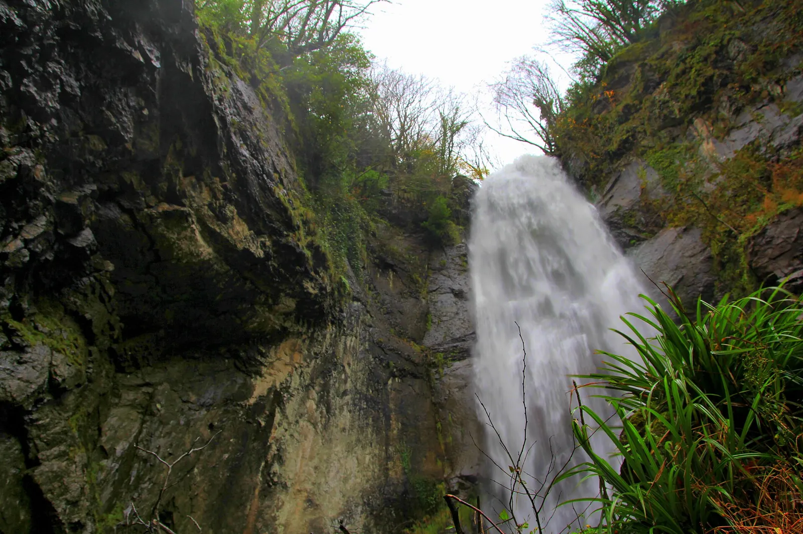

צילום: Sosotedrd / Wikimedia Commons · CC BY-SA 4.0
1
הבולבר (הטיילת)
הטיילת לאורך חוף הים השחור, וממנה אפשר להגיע ברגל אל פסל עלי ונינו ומגדל האלפבית.
אטרקציות, אוכל כשר, מידע מעשי וטיפים למטייל הישראלי

הטיילת לאורך חוף הים השחור, וממנה אפשר להגיע ברגל אל פסל עלי ונינו ומגדל האלפבית.

נמצא ב-Miracle Park שליד הנמל, צמוד למגדל האלפבית.

מגדל בגובה 130 מטר, ליד פסל עלי ונינו.

בכיכר עומד מאז 2007 פסל מדיאה המחזיקה את גיזת הזהב, ולידה שעון אסטרונומי, כיכר הפיאצה, מסגד אורטה ג'אמה והקתדרלה.

רכבל באורך כ-2.6 ק"מ מהנמל לגבעה שמעל העיר. הלוך-חזור: 39 לארי למבוגר (12+), 9 לארי לילד בגילאי 5–12, ועד גיל 5 בחינם. הכרטיס תקף 6 חודשים, וכל כיוון לוקח כ-15 דקות. התחנה התחתונה: 1 Bako St. לפי האתר הרשמי פועל 10:00–21:00 (במקורות אחרים מופיעות שעות שונות).

נוסד ב-1912 בכף הירוק, כ-9 ק"מ צפונית למרכז. כניסה לתייר: 25 לארי (האתר הרשמי). שעות: 9:00–18:30 (לפי מקור משני).

מבצר רומי מהמאה ה-1 עם 18 מגדלים, כ-12–15 ק"מ דרומית לבטומי (20–30 דקות נסיעה). כניסה לתייר: 15 לארי (מקור משני). פתוח כל יום, כדאי להגיע לפני 17:00.

מגיעים במיניבוס 77 מהתחנה הישנה (1 Mayakovsky St) לכיוון קדה, יורדים ליד גשר הקשת של מחונצתי והולכים 5 דקות. הכניסה חופשית (מקורות משניים).
מחירים בלארי גאורגי (GEL), נכון ל-4.11.2026; מומלץ לוודא לפני הביקור. התמונה בכרטיס של עלי ונינו היא שקיעה בבטומי, כי לא מצאנו תמונה ברישיון חופשי של הפסל.
השליחים הם הרב זאבי והרבנית מושי מנדלזון. מרכז מבקרים, תפילות וארוחות שבת. כתובת: 10 Vakhtang Gorgasali St.
מסעדה בשרית בכשרות מהדרין של הרב מאיר קוזלובסקי, עם משגיח צמוד, מטבח גאורגי-ישראלי. בבית חב"ד, 10 Vakhtang Gorgasali St. ראשון–חמישי 12:30–22:30, שישי 11:30–14:30 (השעות משתנות לפי העונה). אפשר להזמין אוכל לשבת ביום חמישי.
Zurab Gorgiladze 18.
לפי ביקורות, מתווספים דמי שירות של 15%.
שימו לב: מסעדות אלה אינן כשרות.
לפי נתוני האקלים, סוף מאי עד יוני היא תקופה חמה עם פחות גשם, ויולי–אוגוסט הם עונת הרחצה. בבטומי יורד הרבה גשם, במיוחד בספטמבר עד ינואר, אז כדאי לארוז מטרייה.
| חודש | מקס׳ °C | מינ׳ °C | משקעים (מ"מ) |
|---|---|---|---|
| ינואר | 6.6 | 4.3 | 234.7 |
| פברואר | 7.6 | 4.0 | 183.4 |
| מרץ | 12.3 | 5.5 | 156.6 |
| אפריל | 18.6 | 9.1 | 90.1 |
| מאי | 22.8 | 12.9 | 92.5 |
| יוני | 27.7 | 17.0 | 141.0 |
| יולי | 31.1 | 19.9 | 164.9 |
| אוגוסט | 30.9 | 20.3 | 220.7 |
| ספטמבר | 26.1 | 17.1 | 330.1 |
| אוקטובר | 19.4 | 13.5 | 321.5 |
| נובמבר | 12.4 | 9.2 | 305.5 |
| דצמבר | 7.6 | 6.1 | 277.7 |
ממוצעים לשנים 1981–2010 (תחנת שדה התעופה של בטומי, לפי NCEI/WMO דרך ויקיפדיה).
טיסות ישירות מתל אביב לבטומי מפעילות ישראייר, אל על וארקיע, כ-22 טיסות בשבוע. זמן הטיסה כשעתיים ורבע. בטומי נמצאת ב-UTC+4.
קו 10 יוצא מהטרמינל, והנסיעה למרכז לוקחת 20–30 דקות. משלמים בכרטיס אשראי או ב-Batumi Card בלבד, בלי מזומן. בחורף האוטובוס האחרון עשוי לצאת כבר ב-20:00–22:00. ב-Bolt וב-Yandex Go הנסיעה עולה כ-10–15 לארי. למוניות בפתח הטרמינל אין מונה, ונהגים מבקשים 30–40 לארי, אז סגרו מחיר מראש.
אוטובוסים עירוניים (תשלום בכרטיס אשראי או Batumi Card), ואפליקציות Bolt, Yandex Go ו-Maxim.
הלארי הגאורגי (GEL, ₾) הוא אמצעי התשלום החוקי היחיד. הכספומטים בשדה התעופה פועלים מסביב לשעון. לא נהוג לתת טיפ לנהגי מוניות, ועיגול הסכום הוא מחווה נחמדה.
ישראלים נכנסים לגאורגיה בלי ויזה, לשהייה של עד שנה. מ-1.1.2026 כל תייר חייב ביטוח בריאות ותאונות בכיסוי של 30,000 לארי לפחות לכל תקופת השהייה.
יש לנו חבילות לבטומי עם טיסה ומלון. דברו איתנו ונתאים לכם חופשה:
כל המידע נבדק ב-04.11.2026. מחירים ושעות עשויים להשתנות; מומלץ לבדוק באתרים הרשמיים לפני הביקור.
המחיר נכון ל-4.11.2026, בכפוף לזמינות וט.ל.ח